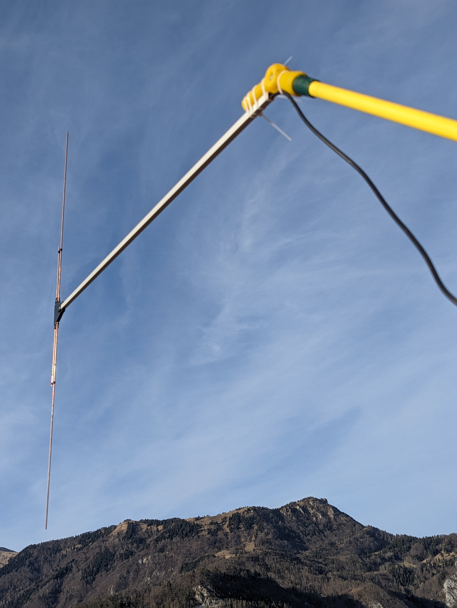

S56AS
Izpit za radioamaterja A razreda sem opravil decembra 2023, klicni znak S56AS pa pridobil v januarju 2024
Trenutna oprema, ki jo uporabljam:

Homemade half wave fan Dipole
UVK5(8)&Nagoya NA-771
Domov
QRZ